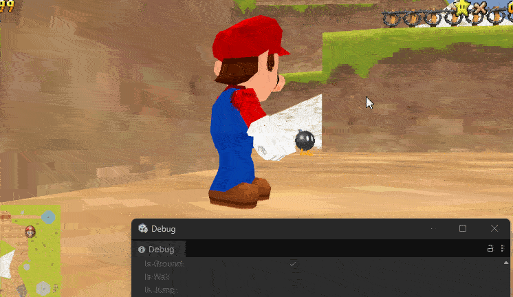
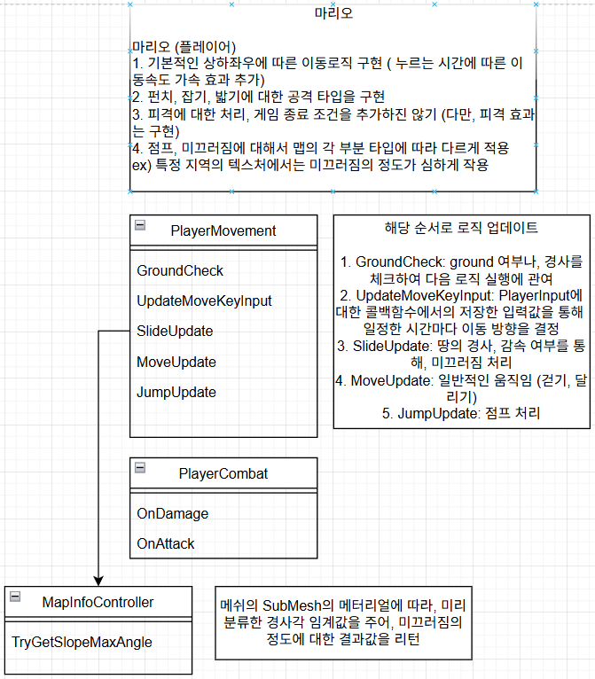
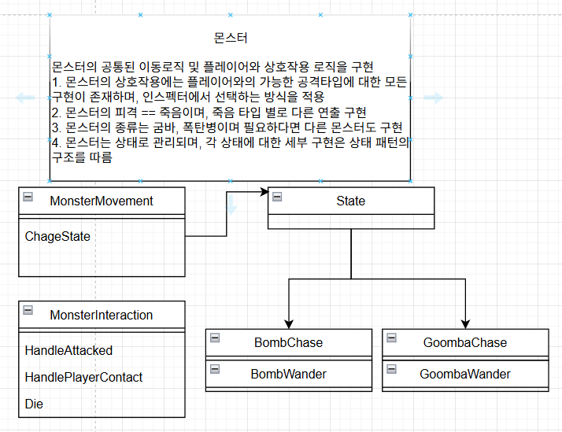
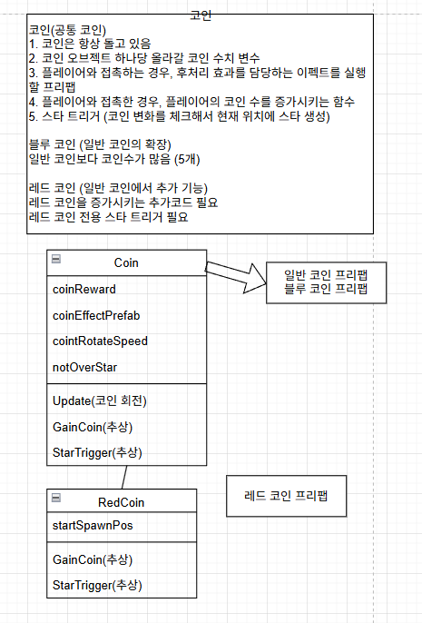
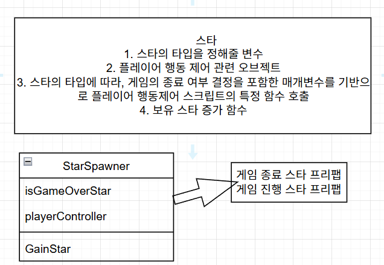
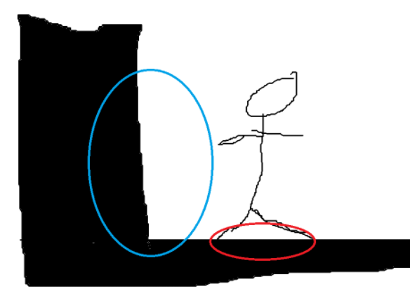

개발노트
3D PLATFORMER · 2024.09 / 2026.02 — 03 · PM / 게임 총괄 제작
Super Mario 64 NDS
폭탄병의 전장을 Unity로 옮기면서 같은 각도의 경사에서도 마리오가 다르게 미끄러지는 이유를 추적했습니다.

담당 작업
걷기·가속·슬라이드·3단 점프 이동 시스템
접촉면 Normal을 활용한 벽과 지면 판별
상태 패턴 기반 굼바·폭탄병 행동 구현
코인·스타·VFX·SFX 등 스테이지 플레이 루프
구현 과정
입력과 물리 주기 분리
PlayerInput 콜백에서 입력을 저장하고 FixedUpdate 주기에 MoveDir로 반영해 Rigidbody 물리와 입력 처리 시점을 맞췄습니다.
표면 상태 판정
Contact Normal의 y값으로 벽과 지면을 구분하고, 충돌한 서브메시의 재질에서 미끄러짐 임계값을 가져와 Slide 진입 여부를 정했습니다.

이동 감각 구성
걷기가 유지되면 가속해 달리기로 전환하고 Physics Material의 마찰을 조절해 경사면 슬라이드를 만들었습니다. GroundCheck와 Slide 상태를 조합해 3단 점프 조건을 제한했습니다.

플레이 루프 완성
굼바와 폭탄병의 상태, Punch·Press·Boom 피격 타입, 코인과 스타를 연결했습니다. 일반·블루·레드 코인과 100코인 스타까지 원작의 목표 흐름을 재구성했습니다.

개발 중 해결한 문제
하나의 MeshCollider에서 벽과 바닥을 구분할 수 없음
폭탄병의 전쟁터 맵이 거대한 단일 콜라이더라 레이어 분리가 불가능했습니다. 접촉 법선의 수직 성분을 사용해 지면, 벽, 경사면을 런타임에 분류했습니다.
이동이 즉각 변해 원작의 관성이 사라짐
목표 속도를 바로 대입하지 않고 걷기 지속 시간을 기준으로 가속도를 누적했습니다. Slide에서는 별도의 마찰과 애니메이션 상태를 사용해 조작감의 연속성을 유지했습니다.
몬스터별 상태 코드가 반복됨
상태 전환과 Blackboard 데이터는 추상 계층으로 올리고, 순찰·추격은 Navigation 기반 공통 상태로 만들었습니다. 몬스터별 공격과 사망 반응만 독립 구현했습니다.
전체적인 클래스들의 관계 정의 및 게임 구조 설계
기능 기획 배경
슈퍼 마리오 64 NDS의 특정 씬을 구성하는 마리오, 몬스터, 아이템, 맵에 대한 전체적인 구조를 설계해야 게임을 제작할 수 있다고 판단하여 첫 단계로 수행
구현방식
- 큰 분류로 마리오, 몬스터, 맵, 코인 및 스타로 나누어 추상적인 클래스 다이어그램을 작성
- 마리오

- 몬스터

- 아이템 (코인, 스타)


구현성과
- 전체 구현 로직에 대한 설계를 통해, 개발의 방향성이 정의
인게임 오브젝트의 필요 기능 제작
기능 기획 배경
각 요소에 대한 세부 구현이 필요
구현방식
- 마리오
전체적인 구현 방식은 GroundCheck, InputUpdate, Slide, Move, Jump의 처리로 이루어짐
- GroundCheck

맵 리소스가 외부 요인에 의해, 하나의 거대한 메쉬 콜라이더로 구성된 상황
마리오의 벽과 땅의 타입을 구분해야 점프와 슬라이드등을 체크할 수 있었기에, Contact의 normal의 y좌표가 땅과 벽의 임계치를 넘는지를 체크하는 로직을 구현
- 예시
- InputUpdate
PlayerInput에 대한 콜백 함수로 받아진 입력값을 FixedDelta마다 MoveDir로 입력 받아서 업데이트
- Slide
전체 맵이 각 서브 메쉬에 따라서 구현되었기에, 서브 메쉬의 메터리얼에 따라서, 미끄러짐 임계치 값을 가져와서 Slide의 로직을 구현
Slide는 Rigidbody기반으로 구현되었고, Physics Material의 마찰력 계수의 조정을 통해, 미끄러질 수 있도록 처리, 또한, 애니메이션과 연동
- 예시
- Move
걷기, 달리기 구현 및 두 상태 의 자연스러운 전환 시간 변수를 두어, 걷는 것이 지속되면, 실제 원본 게임처럼 가속도가 붙으며 빨라지는 기능도 포함
- 예시
- Jump
원작 고증을 위해, 3단 점프 기능을 구현했으며, GroundCheck와 Slide 여부에 따라서 점프가 가능한 경우에만 수행되도록 구현
- 예시
- 몬스터
몬스터는, 폭탄병과 굼바로 구성
각 몬스터들은 추상화 로직 (상태 패턴 관리, BlackBoard 변수)들이 주로 존재
각 상태에 대한 세부 구현을 통해 배회, 추격(Unity Navigation) 과 같은 상태들을 구현
마리오와의 상호작용의 결과로 피격, 공격만 존재하며, 피격은 곧 사망이므로 피격타입을 다음과 같이 나누어서 구현
- 피격 타입: Punch, Press, Boom
- 공격: 마리오의 넉백과 함께 1의 데미지
- 굼바 예시
- 폭탄병 예시
- 맵, 코인, 스타
- 맵: 서브메쉬들로 구성된 거대한 “폭탄병의 전쟁터”의 맵 리소스를 적용해서 구현함
- 코인: 일반, 블루, 레드 코인으로 구성되어 있으며, 코인 100개를 모으면 나오는 이스터에그 스타 기능도 포함
- 스타: 슈퍼마리오 NDS 64 전반적인 필요 자원으로 등장하며, 별을 얻었을때, 해당 스테이지가 종료됨 (이스터 에그 스타 제외)